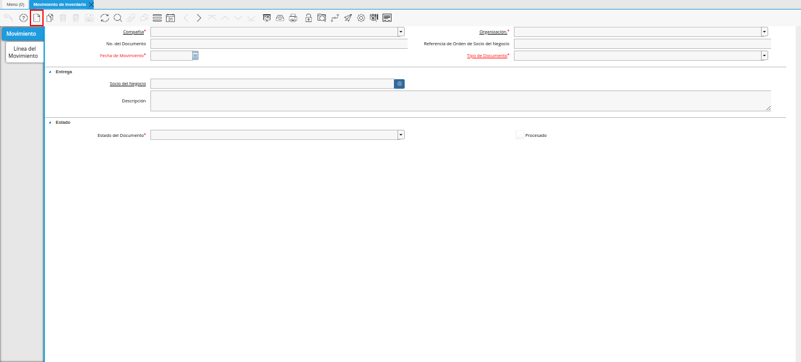
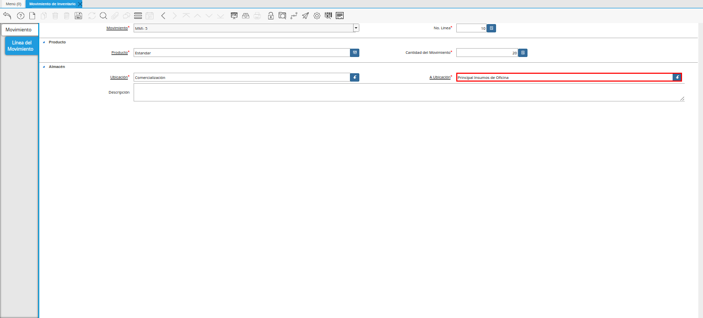
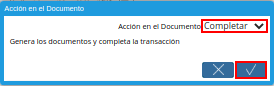
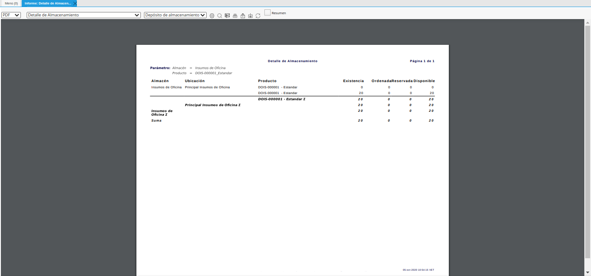

3.1.1. Registro de Movimiento de Inventario¶
Para ejemplificar el procedimiento es generado el reporte “Detalle de Almacenamiento” del producto “Estándar” en el almacén “Insumos de Oficina”, el mismo es visualizado de la siguiente manera antes del movimiento de inventario.
Imagen 1. Reporte Detalle Almacenamiento Antes del Movimiento

Ubique y seleccione en el menú de ADempiere, la carpeta “Gestión de Materiales”, luego seleccione la ventana “Movimiento de Inventario”.

Imagen 2. Menú de ADempiere
Podrá visualizar la ventana “Movimiento de Inventario” donde se encuentran los registros de los diferentes movimientos de inventarios realizados en la organización.

Imagen 3. Ventana Movimiento de Inventario
Seleccione el icono “Registro Nuevo”, ubicado en la barra de herramientas de ADempiere para crear un nuevo registro de movimiento inventario.

Imagen 4. Icono Registro Nuevo
Seleccione en el campo “Organización”, la organización desde la cual se esta realizando el movimiento de inventario.

Imagen 5. Campo Organización
En el campo “No. de Documento”, no es necesario ingresarlo en forma manual, al momento de realizar un registro, ADempiere genera un número de secuencia automáticamente para el documento, al seleccionar la opción guardar del nuevo registro de movimiento de inventario.

Imagen 6. Campo No. del Documento
Introduzca en el campo “Referencia de Orden de Socio del Negocio”, la referencia de orden del socio del negocio.

Imagen 7. Campo Referencia de Orden de Socio del Negocio
Introduzca en el campo “Fecha de Movimiento”, la fecha en la cual se esta realizando el movimiento de productos.

Imagen 8. Campo Fecha de Movimiento
Seleccione el tipo de documento a generar en el campo “Tipo de Documento”, la selección de este define el comportamiento del documento que se esta elaborando, dicho comportamiento se encuentra explicado en el documento Tipo de Documento elaborado por la empresa ERPyA.

Imagen 9. Campo Tipo de Documento
Seleccione en el campo “Socio del Negocio”, el socio del negocio al cual se esta realizando la entrega de los productos relacionados al movimiento de inventario.

Imagen 10. Campo Socio del Negocio
Introduzca en el campo “Descripción”, una breve descripción del movimiento de inventario que esta realizando.

Imagen 11. Campo Descripción
Note
Recuerde guardar los cambios realizados en los campos de la pestaña “Movimiento”, seleccionando el icono “Guardar Cambios” ubicado en la barra de herramientas de ADempiere.
Seleccione la pestaña “Línea del Movimiento” y proceda al llenado de los campos correspondientes.

Imagen 12. Pestaña Línea de Movimiento
Podrá visualizar en el campo “Movimiento”, el número de registro al que pertenece el registro de la línea en el que se encuentra.

Imagen 13. Campo Movimiento
Seleccione en el campo “Producto”, el producto involucrado en el movimiento de inventario.

Imagen 14. Campo Producto
Seleccione en el campo “Cantidad del Movimiento”, la cantidad de productos involucrados en el movimiento de inventario.

Imagen 15. Campo Cantidad del Movimiento
Seleccione en el campo “Ubicación”, la ubicación exacta donde se encuentra localizado el producto.

Imagen 16. Campo Ubicación
Seleccione en el campo “A Ubicación”, la ubicación exacta donde será almacenado o donde va dirigido el producto.

Imagen 17. Campo A Ubicación
Introduzca en el campo “Descripción”, una breve descripción del movimiento de inventario que esta realizando.

Imagen 18. Campo Descripción
Note
Recuerde guardar los cambios realizados en los campos de la pestaña “Línea del Movimiento”, seleccionando el icono “Guardar Cambios” ubicado en la barra de herramientas de ADempiere.
Seleccione la pestaña principal “Movimiento”, luego seleccione la opción “Procesar Movimientos” desplegada al seleccionar el icono “Proceso”, ubicado en la barra de herramientas de ADempiere.

Imagen 19. Pestaña Movimiento y Opción Procesar Movimiento
Seleccione la acción “Completar” y la opción “OK” para completar el documento “Movimiento de Inventario”.

Imagen 20. Acción Completar y Opción OK
3.1.2. Consultar Reporte de Almacenamiento¶
Al generar el reporte “Detalle de Almacenamiento” del producto “Estándar” en el almacén “Insumos de Oficina”, el mismo es visualizado de la siguiente manera después del movimiento de inventario.

Imagen 21. Reporte Detalle Almacenamiento Después del Movimiento